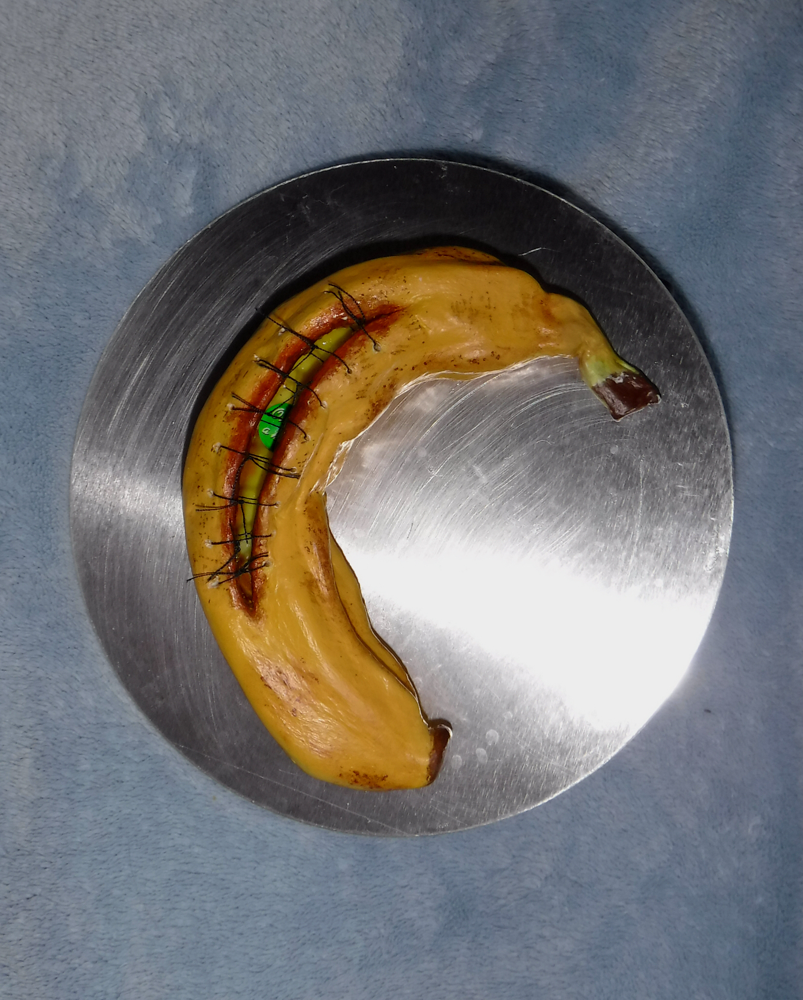

Almost Ripe, Almost Gone
A reflection on healing, breakdown, and the quiet urgency to preserve what's slipping away. 🍌🩹
A reflection on healing, breakdown, and the quiet urgency to preserve what's slipping away. 🍌🩹

.JPG)
Materials: Air-dry clay, thread, acrylic paint, Mod Podge (glossy & matte)
Medical Concept: Basic Suture Technique
This piece exaggerates the decaying process of a banana, transforming it from an everyday object into a site of tension between healing and breakdown. The visible sutures mimic emergency repair — a desperate act of preservation on something already past its prime. It reflects the human tendency to hold onto things long after they’ve started falling apart — relationships, habits, even versions of ourselves. The contrast between glossy "freshness" inside the wound and the bruised, fading peel emphasizes this emotional conflict: the urge to save what is inevitably slipping away.
Galervia is more than a name — it's a space for softness, story, and the study of feeling. I'm Nicole, and this is my ever-evolving archive of reflection and creation.